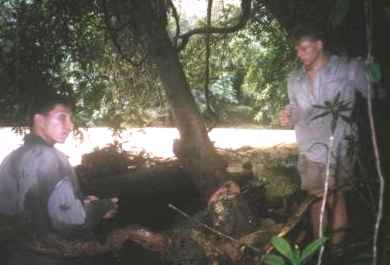
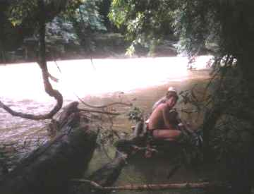
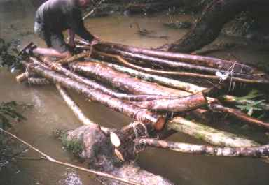
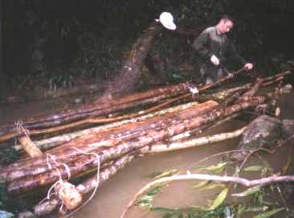
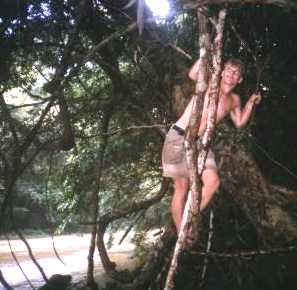
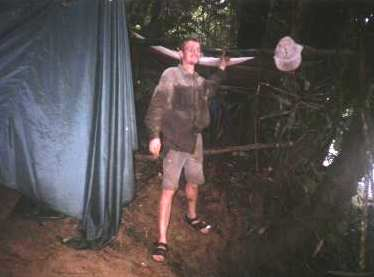
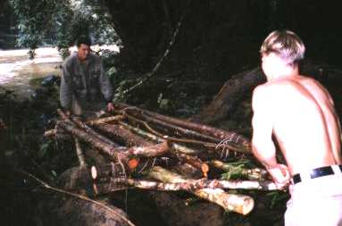
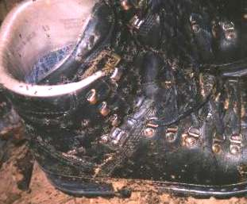

Terwijl Ries en ik nog in de tent hingen, vertelde Steven dat het water wel erg snel steeg. Ik ging er om 5:10 uur uit en het water steeg inderdaad enorm snel. Het water was minder dan 0,5 meter onder onze tent. Omdat de contructie gisteravond tijdens het bouwen de neiging had om te vervormen (het rechthoekige frame wordt dan een parallellogram), had ik twee extra touwtjes gebruikt om het geheel te spannen. Zonder deze actie was op dit moment onze hele contructie zeker meegespoeld met de rivier. Toen ook Ries uit de tent was, stond één van de palen niet meer goed op de riverbodem. Door de hevige stroming ging deze enorm trillen. De extra touwtjes die slechts 3 mm dik waren, werden door de stroming enorm strak gespannen. Ik was heel blij dat we gisteravond heel zorgvuldig alle spullen in de tentcontructie hadden gelegd of hoog op hadden gehangen. Spullen die we op het kiezelstandje achter gelaten zouden hebben, zouden we definitief kwijt geweest zijn. Mijn nieuw aangeleerde gewoonte om in de jungle alles zo snel mogelijk op te ruimen (=in mijn backpack stoppen op de juiste plek), heeft zijn vruchten al meerdere malen afgeworpen. De hoop op het terugvinden van de parang, gaf ik bij de aanblik van deze hoge stromende watermassa, meteen op. Ons vlot zat vast met het langste en sterkste touw dat we mee hadden (kan ruim 1000 kg trekkracht weerstaan), zodat we ons daar nu even geen zorgen om hoefden te maken. Ongeveer 10 minuten later werd het water zo hoog dat onze spullen op enkele decimeters na droog bleven. We MOESTEN nu actie ondernemen!
Terwijl ik op de steile oever stond, nam ik alle spullen aan die Steven mij gaf. Steven stond tot over zijn middel in het water en het was erg moeilijk voor hem om rechtop te blijven staan in deze stroming. Het water was nu vlak onder het hangzeil waarop we een half uur geleden nog lagen. Ik legde alle spullen hoog op de oever, maar er was nergens een vlak stuk grond te bekennen. Aan het eind kwamen alle losse spullen uit de tent: lakens en zaklampen. Het regende nog steeds. Toen alle spullen op een veilige plek lagen, moesten we de tent nog redden. Twee dwarsbalken gaan door enorme zomen van het zeil waarop we slapen. Gelukkig lagen de dwarsbalken aan de kant van de oever gewoon los. We hadden gisteren grote gleuven gehakt in de boomstam waarop ze rustten. Op deze wijze hoef je de balken niet vast te maken, terwijl ze niet kunnen verschuiven. We konden de tent er dus gemakkelijk uitschuiven, terwijl het frame van de constructie in tact bleef. Zouden we het frame in dit stadium slopen, dan liepen we het risico dat de stroming ons zou overmeesteren en dat de hele tent door de rivier werd meegenomen. Nu stond alleen het houten frame nog overeind. Het frame reikte tot ongeveer 1,5 meter boven het kiezelstrand, maar alles was nu onder water. Omdat het frame ging drijven, kwamen de palen nog meer los van de bodem en alles trilde door de stroming. Nadat we de tent gered hadden, moesten we het touw nog redden. Terwijl ik tot bijna mijn borst in het water stond en moeite had om mezelf staande te houden, haalde ik voorzichtig het eerste touwtje los. Als eenmaal iets los is, dan houdt de constructie zichzelf niet meer in stand, zodat er twee personen nodig zijn om de boel vast te houden. De derde persoon knoopt alle touwtjes los of snijdt ze door als losknopen niet lukt. De balken van de constructie bewaarden we zo veel mogelijk voor het vlot. Rond 6:00 uur waren we klaar met al de perikelen en spanden we het tentzeil bij de steile oever waar onze spullen lagen. Zo konden we een beetje droog blijven. De plek was steil en zeer glibberig. Terwijl ik met regelmaat uitgleed en mijn evenwicht verloor, aten we samen een pak mariakoeken op.
|  |
Steven en Richard zagen een wat dikkere rubberboom om daarmee het vlot meer drijfvermogen te geven. |
Steven en Richard kregen het idee om een hele dikke boom om te zagen. "Nu gaan we echt een dikke boom omzagen en het drijfvermogen van het vlot verbeteren, zodat we er met gemak met zijn drieën op kunnen! Een zo’n dikke boom drijft nog beter dan wel 20 van die kleine stammetjes..." Als ik sceptisch ben, dan kan ik altijd goed de pessimist (of realist?) uithangen. "Als je vlot zo zwaar is, dan kan je helemaal geen invloed meer uitoefenen met zwemmen. Je bent dan nog meer overgeleverd aan de stroming. Als je dan in een kom zit, dan blijf je daar voor eeuwig zitten. Bovendien hebben we nu al te kort touw. We redden het niet om in één keer terug te varen, zodat we het vlot elke keer weer moeten slopen", was mijn redenatie. Aan de andere kant zag ik ook wel het voordeel van wat meer drijfvermogen in: je zit minder diep in het water en krijgt het dus minder snel koud. We hadden al een boom op het oog met een mooie dikte en die de juiste kant op zou vallen. Steven en Richard begonnen met zagen en ik ging de benzine-brander repareren. Bij het zagen gebruikten ze mijn zaag, maar het midden van de stam was te dik voor mijn zaag. Gelukkig hadden we een paar draadzagen mee. Die dingen wegen maar zo’n 20 gram en je kan er als het moet een hele boom mee omzagen. Zagen met een draadzaag gaat heel langzaam, maar voor het middelste stukje was het te doen. Het was wel hard hout (van de rubberboom) en daardoor duurde de hele operatie toch zo’n 3,5 uur. Na die 3,5 uur werken hadden Ries en Steef wel twee stammetjes ter lengte van ons vlot. Ik had in de tussentijd de brander gerepareerd en wat eten gemaakt. We kozen voor de brander in plaats van het vuur, omdat vuur maken erg lang duurt en op de steile oever bijna ondoenlijk zou zijn. We aten rijst met sambal, ketjap en suiker.
De hilariteit die ontstond toen we het drijfvermogen van de boomstammen gingen testen, is onbeschrijfelijk! We lieten een stam los in het water en het zonk linearecta naar de bodem van de rivier! Na 3,5 uur zagen en hard werken bleken de verkregen stammen gewoon te zinken! De stammetjes van de tentconstructie die we ook mee wilden nemen op het vlot, hebben we daarna ook maar even getest. Slechts een stammetje bleef drijven...
|  |
Vertrekken we zo met het vlot of blijven we nog een dagje hier? |
Het was nu 13:00 uur en we moesten beslissen of we vandaag zouden gaan varen of dat we hier nog een dag zouden
blijven. Ik wilde eerst liever vertrekken, omdat we dan tenminste ‘on the move’ zijn (de tekst op ons T-shirt).
Het zou wel betekenen dat we op stel en sprong weg zouden moeten en ook bij aankomst op een nieuwe plek als
gekken zouden moeten werken om alles voor het donker af te krijgen. Bovendien was het uiterst onzeker of we na
twee uur varen wel ergens aan konden meren. Je bent overgeleverd aan de stroming en er zijn maar enkele
plekken waar je aan kunt meren. Steven dacht dat we binnen een dag varen (zo’n 6 uur) wel terug zouden zijn. Ik
vond dat te optimistisch. Na twee uurtjes varen waren we al zo koud dat we moesten stoppen. Vooral Richard
had het gisteren echt steenkoud in de rivier. Omdat we nogal krap in de tijd zaten, besloten we om morgen zo
vroeg mogelijk te vertrekken.
|  |
Het vlot perfectioneren. |
|  |
En nog even de puntjes op de i zetten voor het vertrek van morgen |
|  |
Steven zaagt hout voor de tentconstructie |
Richard ging koken met de brander. Hij gebruikte de hele dikke boomstam, waar gisteren onze constructie
op steunde, als een soort aanrecht. Het water was weer iets gezakt, zodat de boomstam een stukje uit het water stak.
Het bouwen van de tent was weer erg veel werk. Wel kon ik gebruik maken van drie bestaande bomen, waarvan
er twee half in de rivier stonden. Toen de tent eenmaal af was, hing deze wel geweldig boven de steile oever. Als
je in de tent lag aan de kant van de oever en je keek naar buiten, dan zag je bijna geen oever meer. Je zag de
rivier zo’n 4 meter lager liggen. Het voelde alsof je werkelijk boven de rivier hing. Onze tent hing nu zeker hoog
genoeg. Omdat de tent hing aan niet al te dikke bomen, veerde alles behoorlijk. Bovendien was het erg moeilijk
om in te stappen, vooral voor Ries in het donker. Mijn handen waren erg pijnlijk geworden door het vele
knoopwerk; alles moet namelijk zo strak mogelijk.
|  |
Hier is goed zichtbaar hoe hoog we de komende nacht zouden slapen (hoogte van pet). Rechts is de rivier nog net zichtbaar door de bomen. |
Het water was al weer aardig gezakt en Steven vond nog een touwtje dat ik had laten vallen. Dit touwtje lag ergens in het water zonder stroming, tussen dikke omgevallen boomstammen. Steven’s waterdichte zak bleek van binnen helemaal nat te zijn geworden door de vlottocht van gisteren. Dat betekent dat vrijwel al zijn droge spullen (kleding, medische spullen, etc.) nat waren geworden.
|  |
Het hout voor het frame van het vlot. We leggen het hier op een hogere en dus veilige plek |
We aten rijst met saté-saus (bumbu aangelengd met water) en knoflook. Dit was de laatste echte lekkere saus dat
we hadden. We namen weer elk drie porties, waarvan twee porties met saus. We realiseerden ons dat we de
komende dagen waarschijnlijk geen tijd zouden hebben om vuur te maken. De brander moesten we daardoor zo zuinig
mogelijk gebruiken en vooral ook heel laten en niet kwijt raken. Mankeert er iets aan de brander, dan zullen we
harde rijstkorrels moeten eten!
|  |
Het is moeilijk zichtbaar, maar Ries' schoenen krioelden van de beestjes. Ries lag al in de tent en ik mocht zijn schoenen gaan ophangen. |
Het was al een tijdje donker. En wat moet je in de jungle als je werkelijk niets kunt zien? We stapten met veel moeite voorzichtig de tent in. De hele tent bewoog en een keer schoof een balk zo’n 10 cm naar beneden (touw niet strak genoeg?). De tent was zo hoog dat het spannen van de klamboe niet helemaal gelukt was. De klamboe, die nog nat was van de perikelen van de ochtend, hing zo slap dat deze op onze gezichten lag.